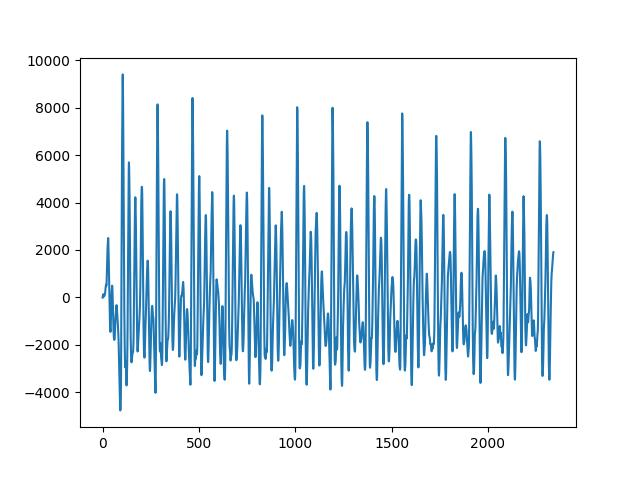
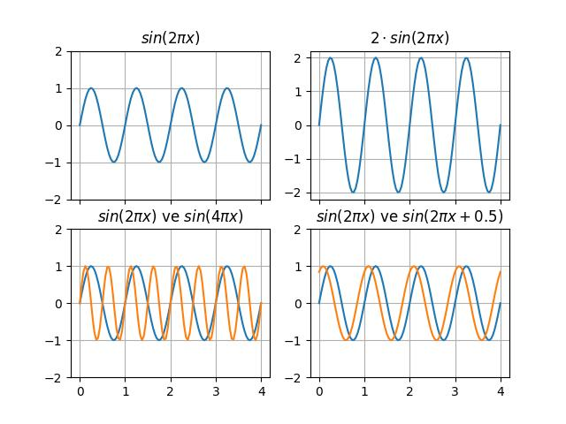
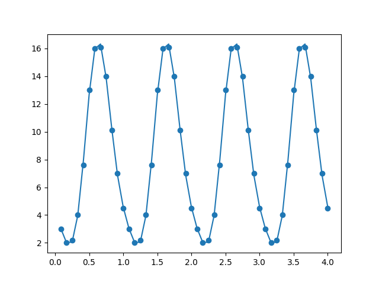
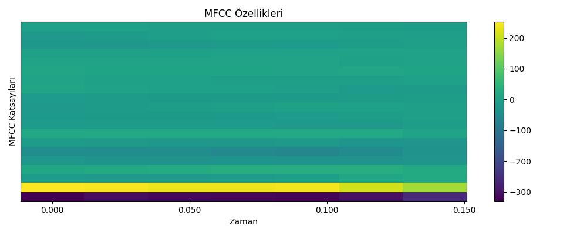

Kulağımızla duyduğumuz sesleri tek boyutlu bir zaman serisi olarak düşünebiliriz. Bir ses parçasını (fonem -phoneme-) grafiklemek istesek alttaki gibi bir grafik elde ederdik. Örnek olarak altta /ow/ fonemini kullandık.
import scipy
owfile = "../../sk/2024/11/phonemes/ow.wav"
fs, ow = scipy.io.wavfile.read(owfile)
plt.plot(ow)
plt.savefig('tser_082_snd_01.jpg')
Kelime sesleri fonem seslerinin birleşiminden oluşurlar. Mesela İngilizce kedi “cat” kelimesi /c/ /a/ /t/ fonemlerinden oluşur, “cow” kelimesi /c/ /ow/ fonemlerinden oluşur. Harfler ile fonemler arasında her zaman birebir eşlik yoktur, mesela İngiliz alfabesinde 26 harf vardır fakat 44 tane fonem mevcuttur.
Grafiğe dönersek periyodik dalgalar görülebiliyor, fakat bir tane değil birden fazla var, yani üstteki ses birkaç periyodik zaman serisinin toplamı. Genel olarak bir ses dalgasının bir ve daha fazla sinüs eğrisi toplamı olduğunu farzedebiliriz. Sinüs derken tabii ki her sinüs bileşeninin genliği, frekansı, ve fazi (phase) farklı olabilir. Bu parametrelerin periyodik grafiği nasıl etkilediğini görmek için alttaki şekle bakabiliriz.
x = np.linspace(0,4,100)
fig, axs = plt.subplots(2, 2, sharex=True)
axs[0,0].plot(x,np.sin(2*np.pi*x))
axs[0,0].set_ylim(-2,2)
axs[0,0].grid(True)
axs[0,0].set_title(r'$sin(2 \pi x)$')
axs[0,1].plot(x,2*np.sin(2*np.pi*x))
axs[0,0].set_ylim(-2,2)
axs[0,1].grid(True)
axs[0,1].set_title(r'$2 \cdot sin(2 \pi x)$')
axs[1,0].plot(x,np.sin(2*np.pi*x))
axs[1,0].plot(x,np.sin(4*np.pi*x))
axs[1,0].set_ylim(-2,2)
axs[1,0].grid(True)
axs[1,0].set_title(r'$sin(2 \pi x)$ ve $sin(4 \pi x)$')
axs[1,1].plot(x,np.sin(2*np.pi*x))
axs[1,1].plot(x,np.sin(2*np.pi*x + 1.0))
axs[1,1].set_ylim(-2,2)
axs[1,1].grid(True)
axs[1,1].set_title(r'$sin(2 \pi x)$ ve $sin(2 \pi x + 0.5)$')
plt.savefig('tser_082_snd_02.jpg')
Üstteki grafiklerde farklı sinüs eğrileri var. Üst solda bir \(\sin(2 \pi x)\) eğrisi görülüyor. Onun genliğini (amplitude) arttırmak için bir sabit sayı ile çarpıyoruz, örnekte iki ile, bu bize sağ üstteki \(2 \sin (2\pi x)\) sonucunu veriyor. Frekans arttırımı için, yani aynı periyot içinde daha fazla salınım için \(\sin\) hesabına geçilen değer daha yüksek bir katsayı ile çarpılabilir, bunun sonucu sol altta. Eğer aynı eğriyi sadece kaydırmak isteseydik bunu \(\sin\) hesabına geçilen değere bir değer toplayarak yapardık, böylece kaydırım gerçekleşirdi, onun sonucu ise sağ altta.
Bu kavramları kullanarak kendimiz de suni ses dalgaları yaratabilirdik, altta mesela iki tane ses dalgası yaratalım. Bazı tanımlar,
import scipy.io.wavfile
T = 1.0; fs = 16000
t = np.linspace(0, T, int(T*fs), endpoint=False) Alttaki sürekli bir bip sesi verecek, telefonda meşgul veren sese benziyor. Bu sesi üretmek için tek bir sinüs eğrisi yeterli.
x = np.sin(2*np.pi*440*t)
x_scaled = x * 32767.0
x_int16 = x_scaled.astype(np.int16)
scipy.io.wavfile.write('/tmp/sound-out1.wav', fs, x_int16)Bir ambulans sirenine benzeyen sesi üretmek için iki tane sinüs eğrisi birleştirebiliriz, bu dalgaların ikisi farklı frekanslarda, ve karışımları bize sonuç sesi veriyor.
x = np.sin(2*np.pi*1500*t - 100*np.sin(2*2*np.pi*t))
x_scaled = x * 32767.0
x_int16 = x_scaled.astype(np.int16)
scipy.io.wavfile.write('/tmp/sound-out2.wav', fs, x_int16)Şimdi ses tanıma konusuna gelelim. Eğer bir sesin birden fazla farklı sinüs eğrisi toplamı olduğu doğru ise, bu ses dalgasının sinüs bileşenlerini ayırabilirsek ses tanıma bağlamında sağlam bir adım atmış olurduk. Fakat sinüs eğrisini, tek sinüs eğrisi olduğu durumda bile, nasıl genliğini büyüterek, yana kaydırarak, frekansını arttırarak tam doğru uyum noktasını bulacağız? Yani veriye uydurmak istediğimiz formül
\[ f(x) = A \sin (x+\varphi) \qquad (1) \]
Genlik \(A\) ile faz ise \(\varphi\) ile gösterilmiş, öyle bir \(A,\varphi\) bulalım ki sonuç sinüs eğrisi tam veriye uysun.
Veriye uydurma deyince akla lineer regresyon geliyor, fakat üstteki formülü olduğu gibi regresyona sokmak mümkün değil, çünkü faz kaydırmak için \(\sin\) içindeki parametrenin değişmesi lazım, regresyon bunları yapamaz. Ama regresyona problemi “katsayı çarpı basit formül” formunda sunabilir miyiz acaba? Bir trigonometrik eşitlikten biliyoruz ki
\[ A \sin (x+\varphi) = a\sin(x) + b\cos(x) \]
ki \(\sin\varphi = \frac{b}{\sqrt{a^2+b^2}}\), ve \(A = \sqrt{a^2+b^2}\) olacak sekilde. Bu eşitliğin doğru olduğunu kontrol edelim,
\[ a \sin(x) + b \cos(x) = \sqrt{a^2+b^2} \left(\frac{a}{\sqrt{a^2+b^2}} \sin(x) + \frac{b}{\sqrt{a^2+b^2}} \cos(x)\right) \]
\[ = A\left[\sin(x)\cos(\varphi) + \cos(x)\sin(\varphi)\right] \]
\[ = A\sin(x+\varphi) \]
O zaman \(a \sin(x) + b \cos(x)\) için regresyon yapmak (1) için regresyon yapmak ile aynı şeydir [4]. Regresyon iki toplam üzerinden tanımlı o formül için en uygun \(a,b\) katsayılarını hesaplayacak.
Eğer birden fazla farklı frekanstaki eğrileri uydurmak istersek, ana formülü şu halde düşünebilirdik,
\[ A_1 \sin(2\pi x+\varphi_1) + A_2 \sin(4\pi x+\varphi_2) + ... \]
Ve onun regresyona hazır açılımı
\[ a_1 \sin(2\pi x) + b_1 \cos(2\pi x) + a_1 \sin(4\pi x) + b_1 \cos(4\pi x) + ... \]
olurdu, ve üstteki formülünü regresyonda kullanırdık.
Ses verisine gelmeden önce alttaki daha basit veri üzerinde görelim, orada bir veya birden fazla sinüs eğrisi uydurmak istiyoruz.
import pandas as pd
df = pd.read_csv('baltic.csv')
df.plot(x='toy',y='degs',kind='scatter')
plt.savefig('tser_sinreg_01.png')
Önce \(\sin\) içinde \(2\pi x\) ile başlarız,
import statsmodels.formula.api as smf
results = smf.ols('degs ~ np.sin(2*np.pi*toy) + np.cos(2*np.pi*toy)', data=df).fit()
print (results.summary()) OLS Regression Results
==============================================================================
Dep. Variable: degs R-squared: 0.969
Model: OLS Adj. R-squared: 0.968
Method: Least Squares F-statistic: 704.3
Date: Fri, 27 Jun 2025 Prob (F-statistic): 1.10e-34
Time: 12:37:22 Log-Likelihood: -63.360
No. Observations: 48 AIC: 132.7
Df Residuals: 45 BIC: 138.3
Df Model: 2
Covariance Type: nonrobust
===========================================================================================
coef std err t P>|t| [0.025 0.975]
-------------------------------------------------------------------------------------------
Intercept 8.2917 0.135 61.407 0.000 8.020 8.564
np.sin(2 * np.pi * toy) -5.9156 0.191 -30.979 0.000 -6.300 -5.531
np.cos(2 * np.pi * toy) -4.0463 0.191 -21.190 0.000 -4.431 -3.662
==============================================================================
Omnibus: 28.673 Durbin-Watson: 1.051
Prob(Omnibus): 0.000 Jarque-Bera (JB): 4.298
Skew: -0.158 Prob(JB): 0.117
Kurtosis: 1.569 Cond. No. 1.41
==============================================================================a,b = results.params[1],results.params[2]
A = (a**2+b**2)
print (A, np.rad2deg(np.arcsin(b**2 / A)))51.367286414382804 18.586661396939277fit1 = results.params[0] + results.params[1] * np.sin(2*np.pi*df.toy) + \
results.params[2] * np.cos(2*np.pi*df.toy)
plt.scatter(df.toy,df.degs)
plt.plot(df.toy,fit1)
plt.savefig('tser_sinreg_02.png')
Uyum fena değil. Daha iyi uyum için daha fazla terim ekleyebiliriz, mesela \(\sin,\cos\) içinde \(2 \pi x\) kullandık, bir de \(4 \pi x\)’li terimler ekleyerek,
import statsmodels.formula.api as smf
formula = 'degs ~ np.sin(2*np.pi*toy) + np.cos(2*np.pi*toy) + ' + \
' np.sin(4*np.pi*toy) + np.cos(4*np.pi*toy)'
results = smf.ols(formula, data=df).fit()
print (results.summary()) OLS Regression Results
==============================================================================
Dep. Variable: degs R-squared: 0.999
Model: OLS Adj. R-squared: 0.999
Method: Least Squares F-statistic: 9519.
Date: Fri, 27 Jun 2025 Prob (F-statistic): 9.48e-63
Time: 12:37:40 Log-Likelihood: 16.130
No. Observations: 48 AIC: -22.26
Df Residuals: 43 BIC: -12.90
Df Model: 4
Covariance Type: nonrobust
===========================================================================================
coef std err t P>|t| [0.025 0.975]
-------------------------------------------------------------------------------------------
Intercept 8.2917 0.026 314.450 0.000 8.238 8.345
np.sin(2 * np.pi * toy) -5.9156 0.037 -158.634 0.000 -5.991 -5.840
np.cos(2 * np.pi * toy) -4.0463 0.037 -108.506 0.000 -4.122 -3.971
np.sin(4 * np.pi * toy) 1.2124 0.037 32.513 0.000 1.137 1.288
np.cos(4 * np.pi * toy) 0.3333 0.037 8.939 0.000 0.258 0.409
==============================================================================
Omnibus: 0.473 Durbin-Watson: 2.983
Prob(Omnibus): 0.790 Jarque-Bera (JB): 0.338
Skew: -0.200 Prob(JB): 0.845
Kurtosis: 2.909 Cond. No. 1.41
==============================================================================
fit2 = results.params[0] + \
results.params[1] * np.sin(2*np.pi*df.toy) + \
results.params[2]*np.cos(2*np.pi*df.toy) + \
results.params[3] * np.sin(4*np.pi*df.toy) + \
results.params[4]*np.cos(4*np.pi*df.toy)
plt.scatter(df.toy,df.degs)
plt.plot(df.toy, fit2)
plt.savefig('tser_sinreg_03.png')
Uyum daha iyi hale geldi.
Üstte sinüs bileşenlerine ayırmayı başardık, o zaman ses verisi için de aynı şeyi yapabiliriz. Hatta eğer bir sesi sinüssel bileşenlerine ayırabiliyorsak, teorik olarak bu bileşenlerden en önemli olanlarını tutup, gerisini atabilirdik ve bu azaltılmış kümeyi tekrar biraraya koyarak orijinal ses yakın bir ses elde etmek mümkün olurdu. Bunun faydası nerede? Çünkü eğer bu yapılabiliyorsa, o azaltılmış kümeyi arama algoritmalarında kullanmak mümkün olurdu, çünkü her sesi temsil eden bir nevi özet, “kodlama” bulmuş oluyoruz, ve bu özet üzerinden (ve eğer elimizde tüm mümkün seslerin özetinin kayıt edildiği bir veri tabanı var ise) sesin ne olduğunu arayıp bulmak rahatlaşabiliyor.
Daha önce işlediğimiz ses parçası üzerinde görelim,
fs, ow = scipy.io.wavfile.read(owfile)
N = len(ow)
t = np.arange(N) / fs
f_start = 100.0
f_end = 4000.0
frequencies_hz = np.linspace(f_start, f_end, 500)
basis_functions = {}
for f in frequencies_hz:
angular_freq = 2 * np.pi * f * t
basis_functions[f'sin{f:.6f}'] = np.sin(angular_freq)
basis_functions[f'cos{f:.6f}'] = np.cos(angular_freq)
X_unaugmented = pd.DataFrame(basis_functions)
Y = pd.Series(ow, name='wav').astype(np.float64)
X_full = sm.add_constant(X_unaugmented, prepend=True)
model = sm.OLS(Y, X_full)
results = model.fit()Regresyon yapıldı, şimdi bu regresyon sonucundaki istatistik önemi fazla olan katsayıları tutalım, gerisini atalım, ve elde tutulan katsayılar ile ses verisini tekrar yaratalım.
basis_matrix_full = X_full
all_coeffs = results.params
is_significant = results.pvalues < 0.05
significant_features = results.pvalues[is_significant].index
print (f'tum {len(basis_matrix_full.columns)} filtre sonrasi {len(significant_features)}')
selected_basis_matrix = basis_matrix_full.loc[:, significant_features]
selected_coeffs = all_coeffs[is_significant]
reconstructed_signal_series = selected_basis_matrix.dot(selected_coeffs)
y = np.array(reconstructed_signal_series).flatten()
y_int16 = y.astype(np.int16)
scipy.io.wavfile.write('/tmp/sound-out3.wav', fs, y_int16)Üstteki tekrar oluşturulmuş sesi dinleyince orijinal ses yakın olduğunu duyabiliriz.
Not: Dikkat edersek üstteki regresyonu en ufak konuşma ses parçası, bir fonem üzerinde yaptık. Bu ufak sesin kendine has bir sinüs eğri karışımı vardı. Fakat insan konuşmasındaki tek bir kelime telafuzunda birden fazla fonem olacaktır. Yani konuşma tanıma amacıyla bir kelimeyi alıp sinüs eğrilerine ayırmak işe yaramaz. Eğer kelime bazında regresyon uygulamak istersek bunu kelime boyunca regresyonun değişmesine izin veren, özyineli bir şekilde yapmalıyız, ve bu regresyon her zaman bir unutma faktörü içermelidir ki ses içinde bir fonemden diğerine geçildiğinde regresyon farklı harmoniklerin katsayılarını yakalayabilmeye başlasın.
Mel Frekansı Kepstral Katsayıları (MFCC), ses işleme alanında, özellikle konuşma tanıma ve müzik sınıflandırma gibi uygulamalarda yaygın olarak kullanılan bir özellik çıkarma tekniği. Temelde, bir ses sinyalinin kısa süreli güç spektrumunun, insan kulağının frekans algısına (Mel ölçeği) yakından uyan doğrusal olmayan bir frekans ölçeği temel alınarak temsilidir. İnsan kulağı, düşük frekanslarda daha hassasken, yüksek frekanslarda daha az hassastır. MFCC, bu doğal insan algısını taklit ederek, sesin spektral zarfını (tınısını) kısa ve verimli bir şekilde temsil eden bir dizi katsayı üretir. MFCC çıkarımının temel adımları,
Ön Vurgulama (Pre-emphasis): Yüksek frekanslardaki enerjiyi artırarak spektral dengeyi sağlar.
Çerçeveleme (Framing) ve Pencereleme (Windowing): Ses sinyali, genellikle örtüşen kısa zaman aralıklarına (çerçevelere) bölünür.
Hızlı Fourier Dönüşümü (FFT): Her bir çerçeve, zaman domeninden frekans domenine dönüştürülür.
Mel Filtre Bankası Uygulaması: Frekans spektrumuna, Mel ölçeğine göre aralıklandırılmış bir dizi üçgen filtre uygulanır. Bu, insan işitme sisteminin duyarlılığını taklit eder.
Logaritma Alma: Filtre bankası enerjilerinin logaritması alınır. (İnsanların yüksek enerjideki küçük değişikliklere daha az duyarlı olmasıyla uyumludur.)
Ayrık Kosinüs Dönüşümü (DCT): Son olarak, bu log enerjilerine DCT uygulanarak korelasyonları azaltılmış MFCC katsayıları elde edilir.
Makine öğreniminde MFCC hesaplandığında, bir ses dosyası için zaman içinde değişen bir katsayılar listesi (bir matris) elde edersiniz. Bu matrisin her bir satırı farklı bir katsayıyı (spektral çözünürlüğü), her bir sütunu ise sesin farklı bir zaman dilimini (çerçeveyi) temsil eder. Bir ses dosyasından elde edilen her bir çerçeveye ait MFCC vektörü, o kısa zaman dilimindeki sesin ozgun bir özelliğini (parçasını) temsil eder. Makine öğrenimi sınıflandırıcıları için, bu çerçevelerin her biri, aynı ses dosyasından gelen, ancak farklı çözünürlüklerde veya anlarda yakalanmış ayrı birer veri noktası (özellik vektörü) olarak kullanılabilir. Örneğin, bir ses tanıma modelinde bu vektörler, konuşulan fonemi (ses birimini) sınıflandırmak için kullanılır.
import librosa.display
y, sr = librosa.load(owfile)
mfccs = librosa.feature.mfcc(y=y, sr=sr, n_mfcc=20)
plt.figure(figsize=(10, 4))
librosa.display.specshow(mfccs, x_axis='time', cmap='viridis')
plt.colorbar()
plt.title('MFCC Özellikleri')
plt.xlabel('Zaman')
plt.ylabel('MFCC Katsayıları')
plt.tight_layout()
plt.savefig('tser_082_snd_03.jpg')
print (mfccs.shape)(20, 7)Üstte görüldüğü gibi MFCC’ye 20 boyutunda özellik vermesini söyledik, ve sonuç olarak 7 tane 20 boyutlu vektör ortaya çıktı. Tekrar vurgulayalım, bu 7 vektörün her biri aynı ses dosyasını temsil etmek için ayrı ayrı birer veri noktası olarak sınıflayıcı algoritmalara verilmelidir. Üstteki boyutlar üzerinden eğer elimizde iki tane ‘cat’ iki tane ‘dog’ ses veri satırı var ise, MFCC sonrası elimizde 14 tane ‘cat’ satırı, 14 tane ‘dog’ satırı olacaktır, ve yapay öğrenme algoritmasi 28 veri satırı ile eğitilecektir.
Ses tanıma yaklaşımlarından bir tanesi her sesi bir Gaussian karışımı (GMM) olarak görür ve bir test ses verisini teker teker bu GMM’lere sorarak hangisinin daha yüksek ihtimalli olduğuna bakar. En yüksek ihtimalli olan aralarından seçilir.
GMM-UBM yaklaşımı GMM [6,7] eğitiminde ilginç bir teknik uygular. İlk fazda eğitim verisi, hangi komuttan geldiğine bakılmadan, birbirine karıştırılarak tek bir “evrensel” GMM’nin eğitimi için kullanılır (eğitim verisinin ne kadarının bu fazda kullanılacağı hiperparametre optimizasyonunun bir parçası olabilir). İlk faz tamamlandıktan sonra ikinci fazda komutlar için ayrı ayrı GMM eğitilme aşamasına gelinir. Fakat bu aşamada her komut başlangıç noktası olarak evrensel GMM’yi kullanarak ilerler, sıfırdan başlamaz. Yani mesela ‘down’ komutu için ayrı bir GMM gerekir, bu GMM için evrensel GMM’nin bir kopyası alınır, ve onun üzerinde güncelleme yapılarak istenen GMM hesaplanır.
Evrensel GMM eğitiminin amacı verideki tüm sesleri kullanarak bir “ses arkaplanı” oluşturmaktır, yani tüm mümkün veri ile bir akustik skala, baz seviye elde edilir, ve diğer tüm spesifik sesler bu baz seviyeden farklılıklar / onun üstüne inşa edilmiş güncellemeler olarak görülür.
Güncelleme hesabı [3] yazısında gördüğümüz maksimum sonsal hesabı (maximum a posteriori / MAP) yöntemidir. Bu yazıda standart sapması bilinen bir Gaussian’ın sadece \(\mu\) güncellemesinin nasıl yapıldığını görmüştük. GMM-UBM için aynı yaklaşım kullanılıyor, ortalaması ve standart sapması bilinen GMM’lerin sadece ortalaması yeni veriyle güncelleniyor.
GMM-UBM MAP güncellemesi
\[ \mu_k^{(MAP)} = \frac{N_k \bar{x}_k + \tau \mu_k^{(UBM)}}{N_k + \tau} \]
formunda verilir, ki \(k\) bir GMM’yi oluşturan \(k\)’inci Gaussian. Bizim daha önce gördüğümüz [3] formülü
\[ \mu_n = \frac{n\sigma_0^2}{n\sigma_0^2 + \sigma^2} m_n + \frac{\sigma^2}{n\sigma_0^2 + \sigma^2} \mu_0 \]
şeklindeydi. Tekrar düzenlersek,
\[ \mu_n = \frac{n m_n + \frac{\sigma^2}{\sigma_0^2} \mu_0}{n + \frac{\sigma^2}{\sigma_0^2}} \]
Birbirlerine eşlersek,
Formüller aynı.
Ses tanıma için kullanılan GMM tabii ki çok boyutlu Gaussian’ların karışımı, bizim kullandığımız ölçüler 16 boyutlu MFCC çıktısı, artı bu çıktıların birinci ve ikinci seviyedeki farklılık (delta) hesapları, toplam olarak her ses kaydı için 39 boyut elde ediyoruz. Karışımdaki Gaussian sayısı ise 64 tane.
Alttaki kodlar üç parça halinde, ilk kod evrensel GMM eğitimi için,
ikincisi MAP güncellemesi yapıyor, üçüncü kod test verisi üzerinde
başarıyı ölçüyor. Verilerin /opt/Downloads/gvoice/train.zip
adlı bir dosyada olduğunu farzettik, bu zip dosyasının içeriği [8]
bağlantısından indirilebilir. Biz eğitim/test verisi paylaşımını 90/10
oranında yaptık, ve test işletildiğinde yüzde 95 doğru tanıma sonucunu
elde ettik.
Kodlar
gmmubm1.py, gmmubm2.py, gmmubm3.py
Kaynaklar
[1] YSA ile Konuşma Tanıma (Speech Recognition)
[3] Bayramlı, İstatistik, Tahmin Edici Hesaplar (Estimators)
[4] Cross Validated, How to find a good fit for semisinusoidal model in R?, http://stats.stackexchange.com/questions/60500/how-to-find-a-good-fit-for-semi-sinusoidal-model-in-r
[5] Ses Komut Tanıma, Dikkat (Attention) Modeli
[6] Bayramlı, İstatistik, Gaussian Karışım Modeli (GMM) ile Kümelemek
[7] Bayramlı, İstatistik, Artımsal (Incremental) GMM
[8] Kaggle, Google Speech Commands